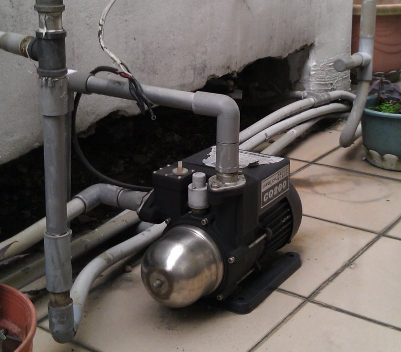
↑住家與頂樓水塔間垂直高度差距不夠，水壓不足，所以在水塔出水的地方要加裝加壓馬達。
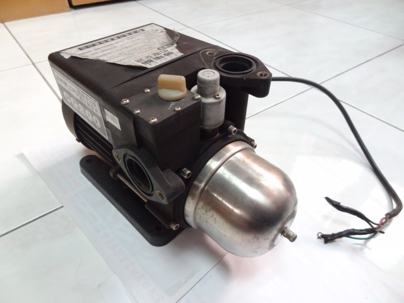
↑有一天，加壓馬達壞了，換上新的之後，舊的當然要..............
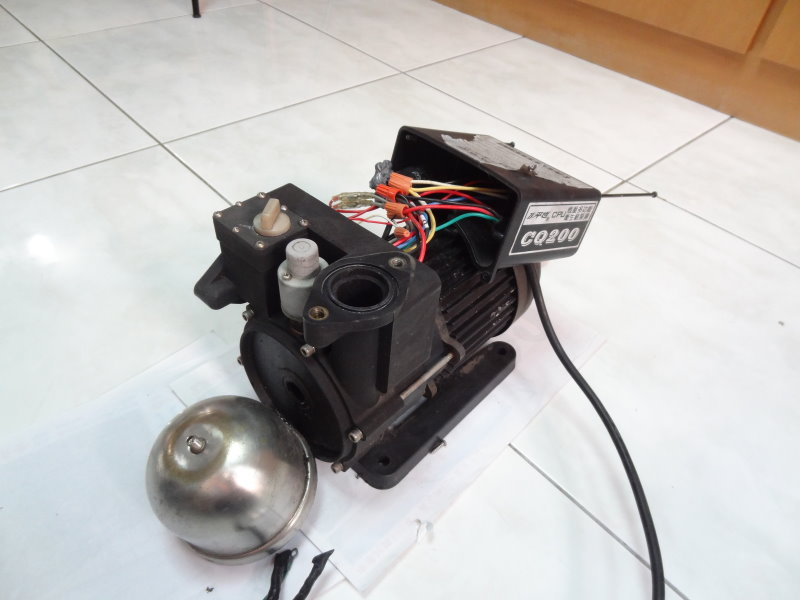
↑拆開它！
我想知道加壓馬達內部的構造，運轉時如何加壓？不運轉時為何水流還能通過？
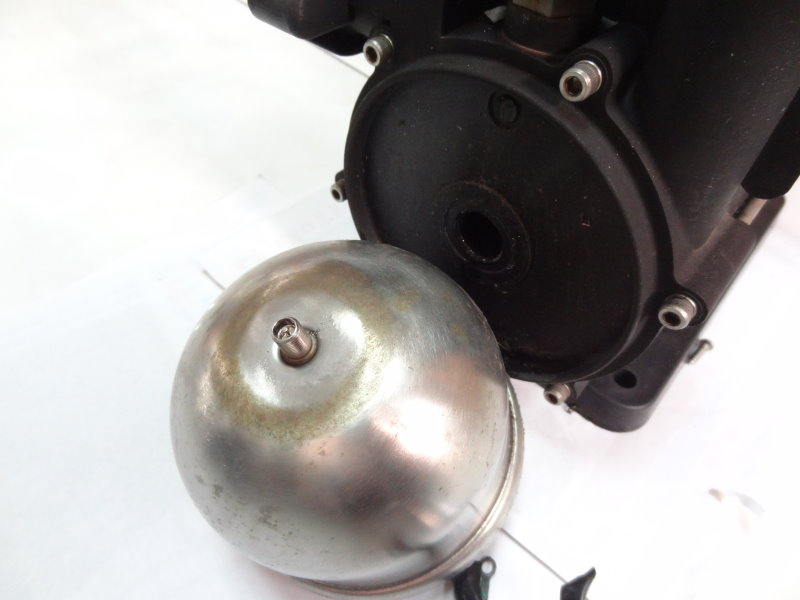
↑前面這個是不鏽鋼壓力氣球，作為壓力的緩衝，維持水壓不要快速變化。前頭是充氣孔，
用腳踏車的打氣瓶就能補足壓力。
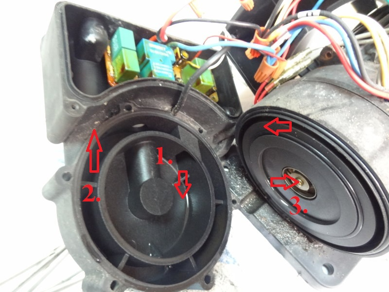
↑水的流向說明：1. 水流入馬達，3. 馬達對水加壓，2. 水流出馬達。
關鍵在3. 水總是能流過，但只有馬達運轉時加壓。
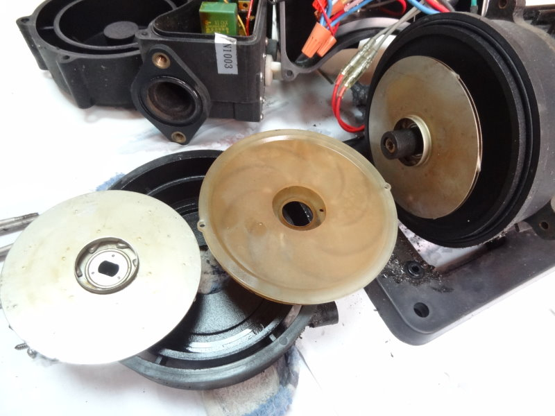
↑再拆，看到裡面的螺旋狀葉片。
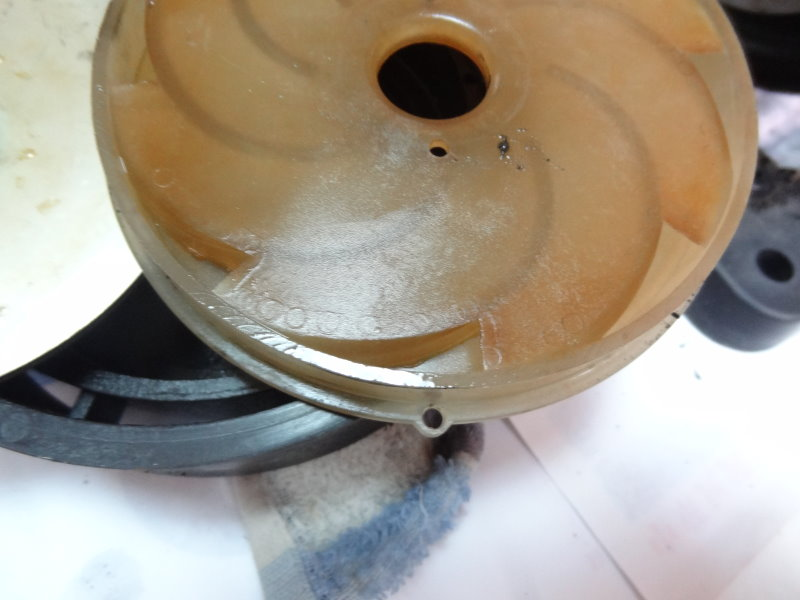
↑葉片特寫，真相大白，加壓的原理是利用葉片高速旋轉時對水流造成的離心力。
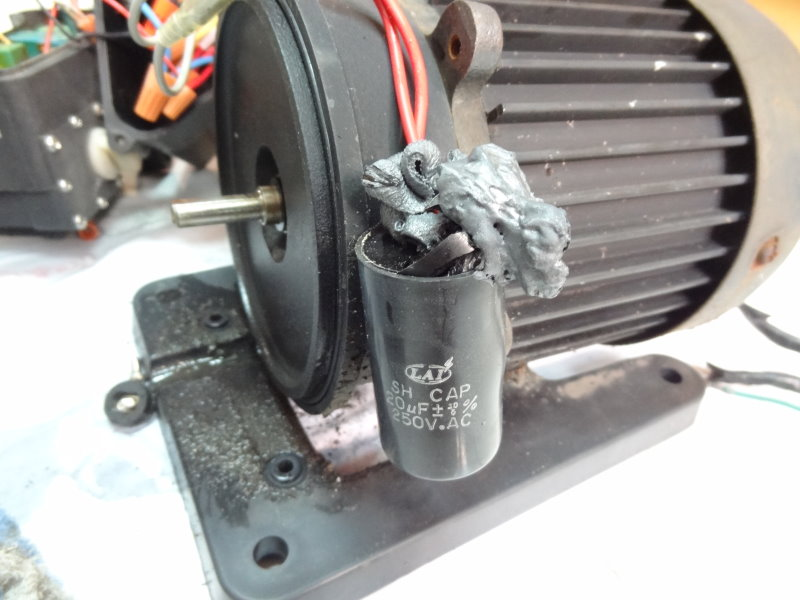
↑整台加壓馬達壞掉的兇手找到了，原來是馬達的大電容爆了。裡面的電解液流出來，還凝固。
有點可惜，如果早發現是這個電容，只換電容說不定還能再繼續使用。
說到電容，還記得我們在 拆電風扇 時也看過一個電容嗎？功能是一樣的喔。
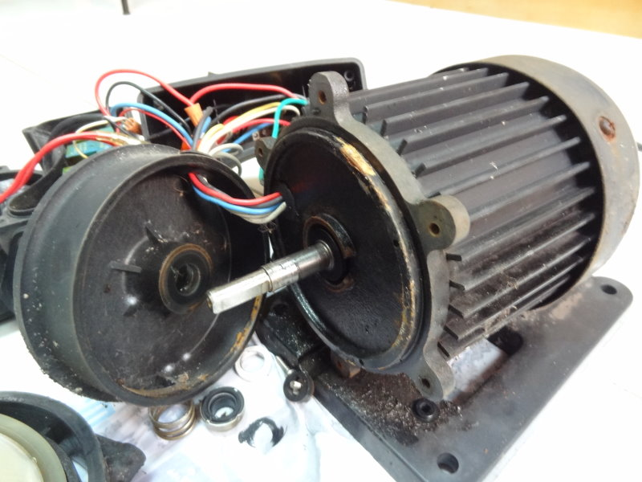
↑再拆，就要進馬達裡面了，前面不行，要從後面來。
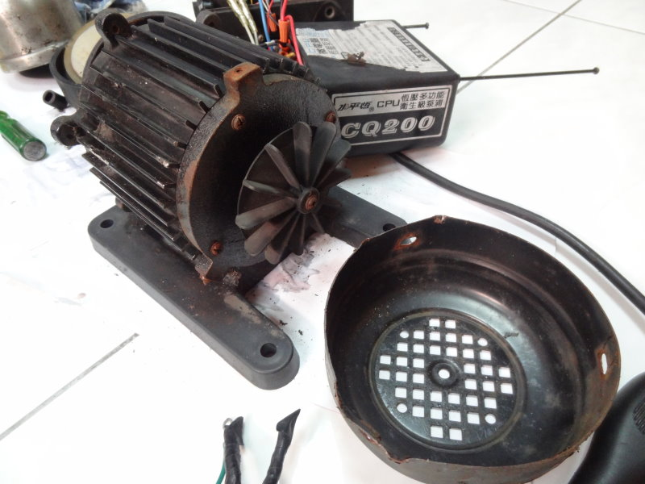
↑後面。
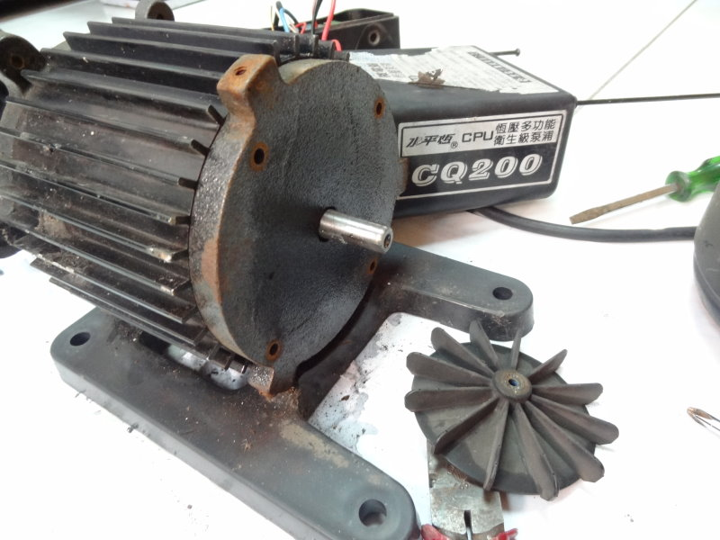
↑再拆。
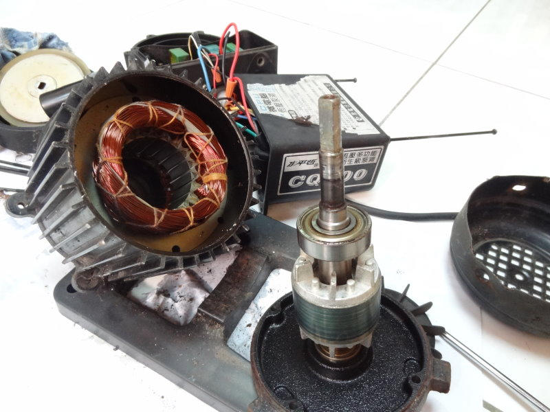
↑再拆，看到馬達內部的構造了，和家裡用的電風扇一樣，都是〝單相交流馬達〞。
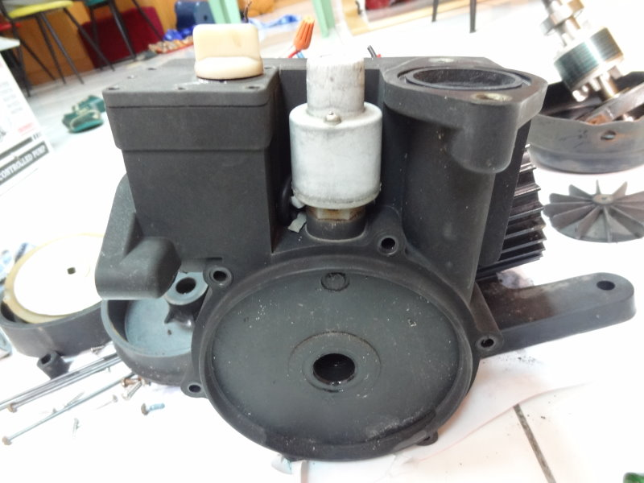
↑再來前面看看壓力開關。
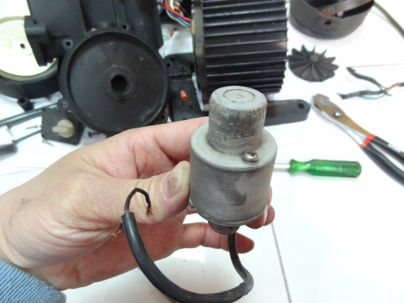
↑這就是壓力開關。
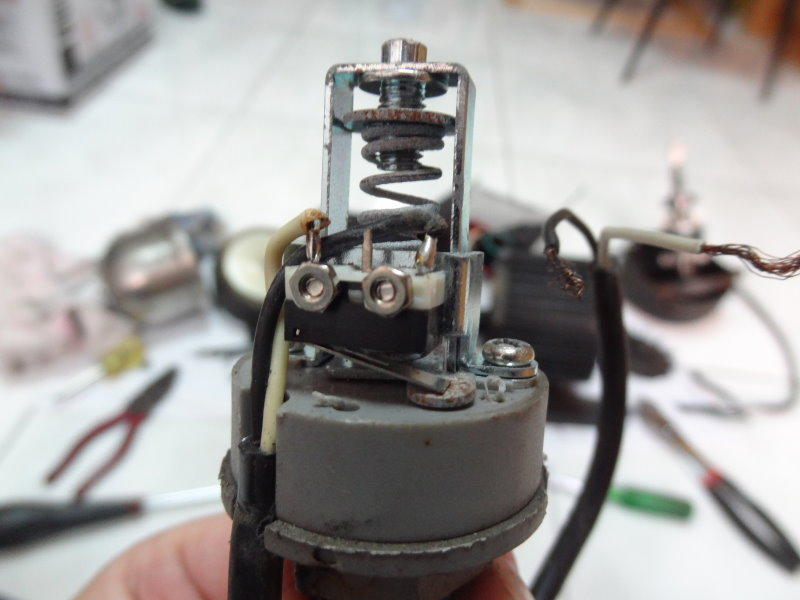
↑拆開來看裡面的構造，彈簧、微動開關。當壓力變化時金屬板帶動微動開關以啟動(or停止)馬達。
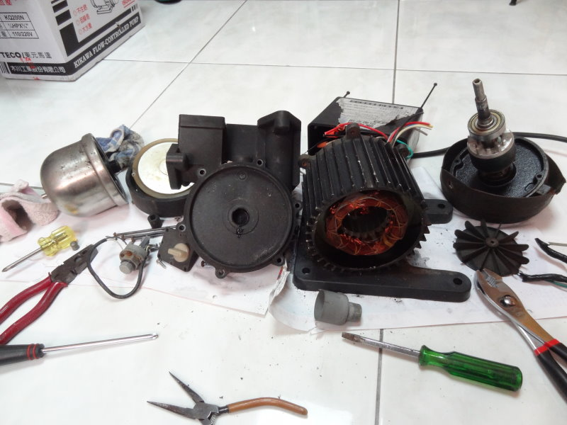
↑ 屍體 零件大合照。